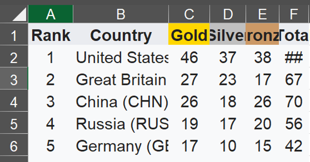
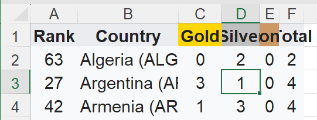
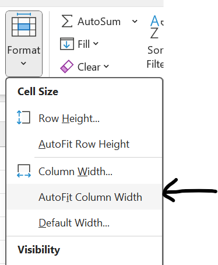
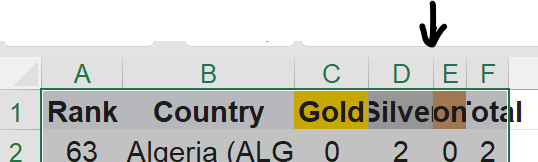

Task 1 - Autofit
In the Spreadsheet document, some data may not be fully displayed and some numbers appear as hashtags (##).  We can solve this by extending the column width by using Autofit.
Method 1
-
Click any cell in the table.

-
Press the shortcut.
-
Then click Format (Under home tab) and select Autofit Columns Width.

Method 2
-
Double click in between columns.

-
This will auto resize the column width to fit the cell values.